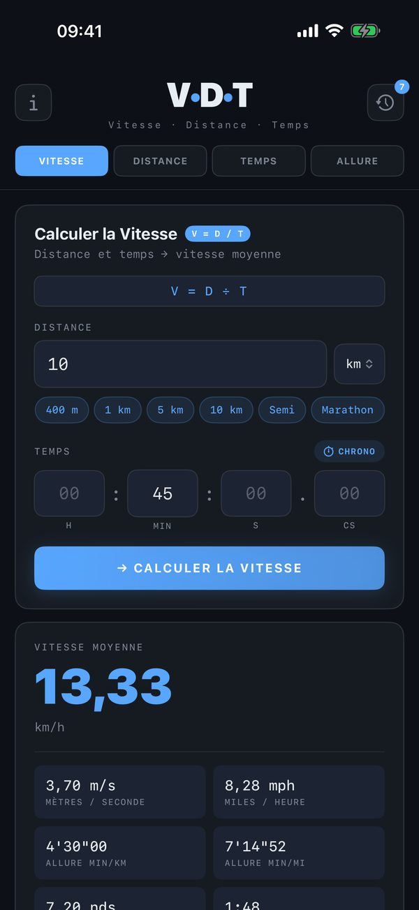
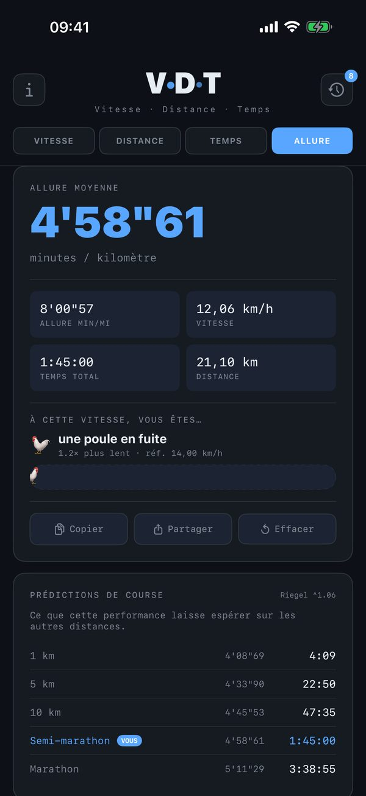
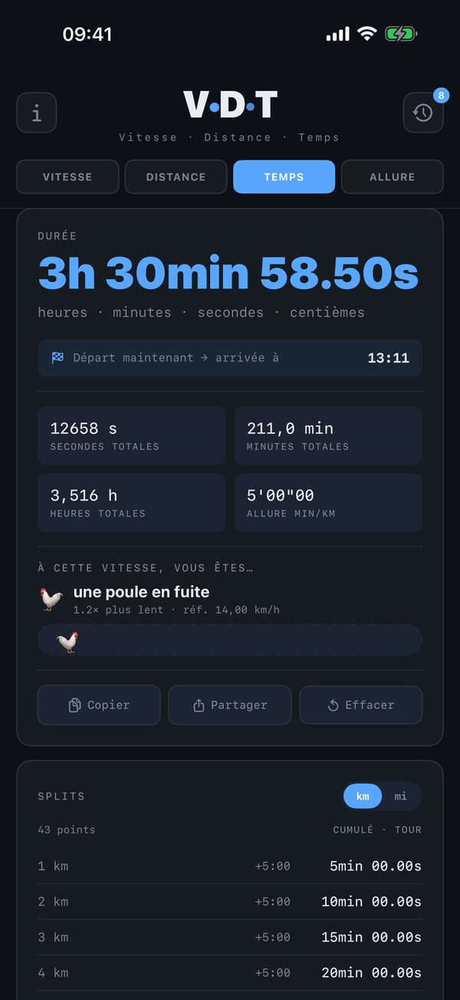
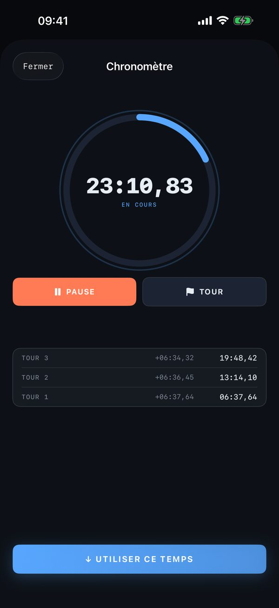

Une distance et un temps donnent une vitesse ; une vitesse et un temps, une distance ; une distance et une vitesse, une durée. V·D·T fait ces trois calculs, et le quatrième que tout coureur se pose : l'allure au kilomètre. Chaque résultat arrive avec ses équivalents dans les autres unités, pour la course à pied, le vélo, la route ou la mer. Pour iPhone.




Quatre calculs
- Vitesse — à partir d'une distance et d'un temps : km/h, m/s, mph, nœuds, allure au kilomètre et au mile, temps au tour de piste de 400 m.
- Distance — à partir d'une vitesse et d'un temps : kilomètres, mètres, miles, milles marins, tours de piste, et la part d'un 10 km, d'un semi, d'un marathon ou d'un 100 km déjà couverte.
- Temps — à partir d'une distance et d'une vitesse : la durée au centième, l'heure d'arrivée si l'on part maintenant, et les temps de passage par kilomètre ou par mile, à partager.
- Allure — d'une course, on tire l'allure au kilomètre et les temps qu'elle laisse espérer sur les autres distances (formule de Riegel). D'une allure, on tire la vitesse et le temps final sur 1 km, 5 km, 10 km, semi, marathon et 100 km.
Pensé pour la saisie
- Distances en km, m, miles, yards ou milles marins ; vitesses en km/h, m/s, mph, nœuds ou pieds par seconde.
- Raccourcis d'une touche : 400 m, 5 km, 10 km, semi, marathon ; 5, 10, 25, 50, 90 ou 130 km/h.
- Le temps se saisit en heures, minutes, secondes et centièmes ; une case vide vaut zéro.
- Virgule ou point, les deux sont acceptés.
- Un chronomètre avec tours, dont la mesure se verse dans le champ temps.
Un historique qui se recharge
Les 60 derniers calculs s'enregistrent d'eux-mêmes. Un toucher rouvre le calcul dans son onglet, champs remplis ; un appui long le partage ou le supprime. Et pour se faire une idée de la vitesse obtenue, V·D·T la compare à un repère familier, de l'escargot à la lumière.
Sans rien de superflu
Pas de compte, pas de publicité, aucun achat intégré, aucune donnée collectée. Tout se calcule sur votre iPhone, hors connexion.